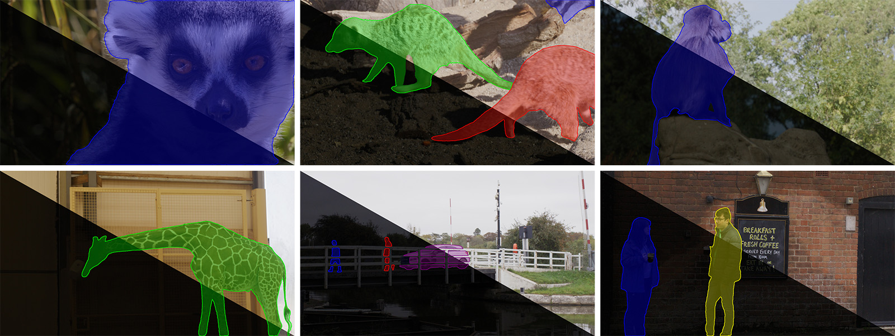
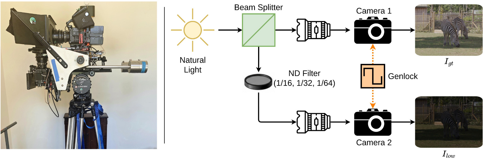

Low-light videos remain an underexplored domain in computer vision research despite their necessity, primarily due to the lack of ground-truth data. While several public datasets exist for low-light video tasks, they suffer from many limitations including restricted motion, few scenes, mild degradations, dependence on event data, and misalignment with ground truth. Furthermore, most existing datasets are designed for only one computer vision task (e.g. low-light video enhancement, object tracking, video semantic segmentation, video object segmentation).
We introduce OLiVES, a benchmark dataset for outdoor scenes with moving objects, designed for joint low-light video enhancement (LLVE) and video object segmentation (VOS) tasks. We address the content gaps in existing datasets by incorporating a broader range of natural textures, animals, occlusions, dynamic content, and close-up scenes. To the best of our knowledge, OLiVES is the first outdoor low-light video dataset captured with professional cinema-grade cameras. The dataset provides 25,254 aligned normal/low-light frame pairs and over 46,000 VOS annotations. We show that training on OLiVES improves performance on both tasks against other publicly-available benchmarks.
OLiVES is captured outdoors with professional cinema-grade cameras at 1920×1080 resolution and 25 fps. We deliberately film scenes with rich and diverse object motion, including wildlife in open zoo enclosures (lemur, gelada, meerkat, giraffe, zebra), as well as everyday outdoor content with pedestrians, vehicles, boats, balls, and flapping flags. The VOS benchmark covers 10 categories: person, giraffe, zebra, monkey, meerkat, lemur, boat, car, flag, ball, with annotations spanning 330 video clips split 80/10/10 into train, validation, and test sets.
To ensure consistent motion between low-light and ground-truth videos, we built a dual-exposure camera system. Two RED V-RAPTOR cameras with Zeiss Prime lenses are mounted side-by-side on a Hawk rig, and a Harrier beam splitter divides the incoming light evenly between two optical paths. Neutral Density (ND) filters — Formatt Hitech Firecrest 1.2, 1.5, and 1.8 (transmittance ratios 1/16, 1/32, 1/64) — are inserted into one path to simulate three low-light levels, while the other path provides the corresponding normal-light reference. Both cameras are synchronised by a Genlock timecode system for precise temporal alignment.
We follow professional cinematography practice: ISO 800, 25 fps, F8 aperture, 1/100s shutter. RAW captures are converted to RGB via REDCINE-X PRO at 4096×2160 and cropped to 1920×1080 regions of interest. A finetuned RoMa dense matcher provides residual spatial-temporal registration without altering the low-light frames.

| Dataset | Modality | Frames | Cam. motion | Obj. motion | Resolution | VOS ann. | Device |
|---|---|---|---|---|---|---|---|
| DRV | Raw | 22,220 | Static | Static | 5496×3672 | ✗ | Sony RX100 VI |
| SDSD | RGB | 37,500 | Dynamic | Static | 1920×1080 | ✗ | Canon 6D Mark II |
| LLRVD | Raw | 4,086 | Dynamic | Dynamic | 2600×1400 | ✗ | Sony α7R IV |
| BVI-RLV | RGB | 31,800 | Dynamic | Static | 1920×1080 | ✗ | Sony α7S II |
| SDE | RGB / Event | 31,477 | Dynamic | Static | 346×260 | ✗ | DAVIS 346 |
| DID | RGB | 41,038 | Dynamic | Static | 2560×1440 | ✗ | 5 camera models |
| OLiVES (Ours) | RGB | 25,254 | Dynamic | Dynamic | 1920×1080 | ✓ | RED V-RAPTOR |
| Dataset | Light | Frames | Categories | Objects | Annotations | New objects? |
|---|---|---|---|---|---|---|
| DAVIS 2016 | Normal | 3,440 | — | 50 | 3,455 | ✗ |
| DAVIS 2017 | Normal | 6,208 | — | 205 | 13,543 | ✗ |
| YouTube-VOS | Normal | 120,532 | 94 | 7,755 | 197,272 | ✓ |
| MOSEv1 | Normal | 130,149 | 36 | 5,200 | 431,725 | ✗ |
| MOSEv2 | Mixed | 468,251 | 200 | 10,074 | 701,976 | ✗ |
| LLE-VOS | Low | 5,600 | — | 120 | 9,606 | ✗ |
| OLiVES (Ours) | Low | 22,893 | 10 | 715 | 46,366 | ✓ |
We benchmark a wide range of state-of-the-art LLIE and LLVE methods, including supervised methods (SNR-aware, LLFlow, Retinexformer, SDSD-Net, StableLLVE, DP3DF, FastLLVE, BVI-CDM, BVI-Mamba, LLVE-STCD), unpaired methods (LightenDiffusion), and unsupervised methods (Wakeup-darkness, SGZSL, Zero-TIG, TempRetinex). Image quality is evaluated with PSNR, SSIM, and LPIPS; temporal consistency is evaluated with tLPIPS, Warping Error, and VMAF.
We benchmark recent semi-supervised VOS methods including STCN, AOT, De-AOT, XMem, Cutie, and OASIS, evaluated with the standard J, F, and J&F metrics. Models are first trained on the unrefined train split with their original settings, then finetuned on the manually refined subset for 20K iterations. Training on OLiVES improves performance over off-the-shelf weights trained on DAVIS 17 + YouTube-VOS 2019 and MOSE.
@inproceedings{olives2026,
title = {OLiVES: An Outdoor Low-Light Video Benchmark for Enhancement and Segmentation},
author = {Anonymous},
booktitle = {Anonymous},
year = {2026}
}